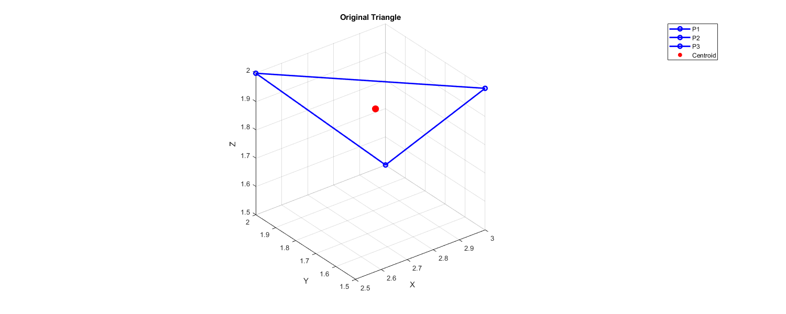
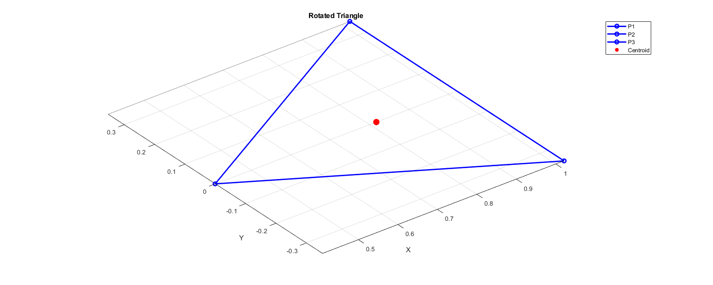
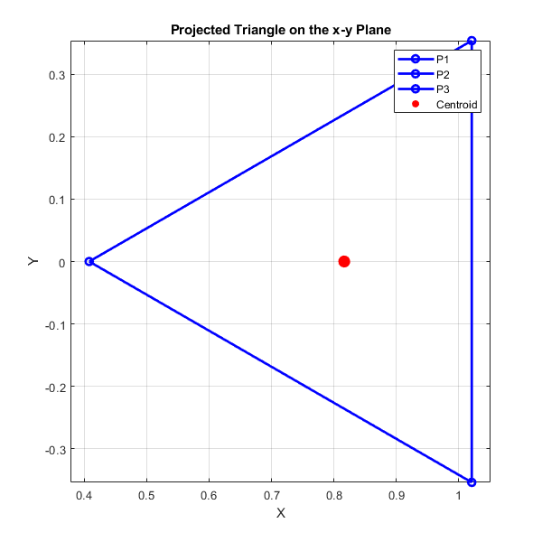

P1 = [3, 1.5, 2, 1];
P2 = [2.5, 2, 2, 1];
P3 = [3, 2, 1.5, 1];
C = (P1 + P2 + P3) / 3;
v1 = P2(1:3) - P1(1:3);
v2 = P3(1:3) - P1(1:3);
normal = cross(v1, v2);
normal = normal / norm(normal);
normal = [normal, 1];
alpha = atan2(normal(1), normal(2));
Rx = [
1, 0, 0, 0;
0, cos(alpha), sin(alpha), 0;
0, -sin(alpha), cos(alpha), 0;
0, 0, 0, 1
];
normal_Rx = normal * Rx;
beta = atan2(normal_Rx(1), normal_Rx(3));
Ry = [
cos(beta), 0, sin(beta), 0;
0, 1, 0, 0;
-sin(beta), 0, cos(beta), 0;
0, 0, 0, 1
];
normal_z = normal_Rx * Ry;
transform = Rx * Ry;
P1_rot = P1 * transform;
P2_rot = P2 * transform;
P3_rot = P3 * transform;
C_rot = (P1_rot + P2_rot + P3_rot) / 3;
xy_proj = [
1, 0, 0, 0;
0, 1, 0, 0;
0, 0, 0, 0;
0, 0, 0, 1
];
P1_proj = P1_rot * xy_proj;
P2_proj = P2_rot * xy_proj;
P3_proj = P3_rot * xy_proj;
C_proj = (P1_proj + P2_proj + P3_proj) / 3;
disp('Final position vectors:');
disp(['P1: ', mat2str(P1_proj)]);
disp(['P2: ', mat2str(P2_proj)]);
disp(['P3: ', mat2str(P3_proj)]);
edgeColor = 'b';
figure('Position', [100, 100, 1500, 600]);
plot3([P1(1), P2(1)], [P1(2), P2(2)], [P1(3), P2(3)], [edgeColor, 'o-'], 'LineWidth', 2);
hold on;
plot3([P2(1), P3(1)], [P2(2), P3(2)], [P2(3), P3(3)], [edgeColor, 'o-'], 'LineWidth', 2);
plot3([P3(1), P1(1)], [P3(2), P1(2)], [P3(3), P1(3)], [edgeColor, 'o-'], 'LineWidth', 2);
scatter3(C(1), C(2), C(3), 100, 'r', 'filled');
title('Original Triangle');
xlabel('X');
ylabel('Y');
zlabel('Z');
legend('P1','P2','P3', 'Centroid');
grid on;
axis equal;
figure('Position', [100, 100, 1500, 600]);
plot3([P1_rot(1), P2_rot(1)], [P1_rot(2), P2_rot(2)], [P1_rot(3), P2_rot(3)], [edgeColor, 'o-'], 'LineWidth', 2);
hold on;
plot3([P2_rot(1), P3_rot(1)], [P2_rot(2), P3_rot(2)], [P2_rot(3), P3_rot(3)], [edgeColor, 'o-'], 'LineWidth', 2);
plot3([P3_rot(1), P1_rot(1)], [P3_rot(2), P1_rot(2)], [P3_rot(3), P1_rot(3)], [edgeColor, 'o-'], 'LineWidth', 2);
scatter3(C_rot(1), C_rot(2), C_rot(3), 100, 'r', 'filled');
title('Rotated Triangle');
xlabel('X');
ylabel('Y');
zlabel('Z');
legend('P1','P2','P3', 'Centroid');
grid on;
axis equal;
figure('Position', [700, 100, 600, 600]);
plot([P1_proj(1), P2_proj(1)], [P1_proj(2), P2_proj(2)], [edgeColor, 'o-'], 'LineWidth', 2);
hold on;
plot([P2_proj(1), P3_proj(1)], [P2_proj(2), P3_proj(2)], [edgeColor, 'o-'], 'LineWidth', 2);
plot([P3_proj(1), P1_proj(1)], [P3_proj(2), P1_proj(2)], [edgeColor, 'o-'], 'LineWidth', 2);
scatter(C_proj(1), C_proj(2), 100, 'r', 'filled');
title('Projected Triangle on the x-y Plane');
xlabel('X');
ylabel('Y');
grid on;
axis equal;
legend('P1','P2','P3', 'Centroid');
Final position vectors:
P1: [1.02062072615966 0.353553390593274 0 1]
P2: [0.408248290463863 2.22044604925031e-16 0 1]
P3: [1.02062072615966 -0.353553390593274 0 1]
  